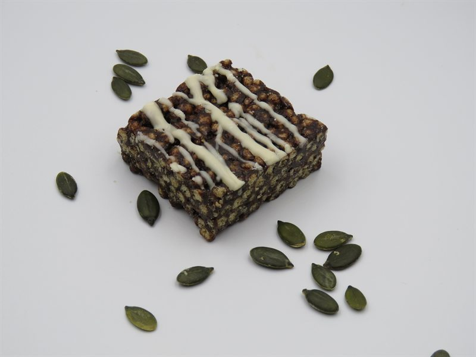
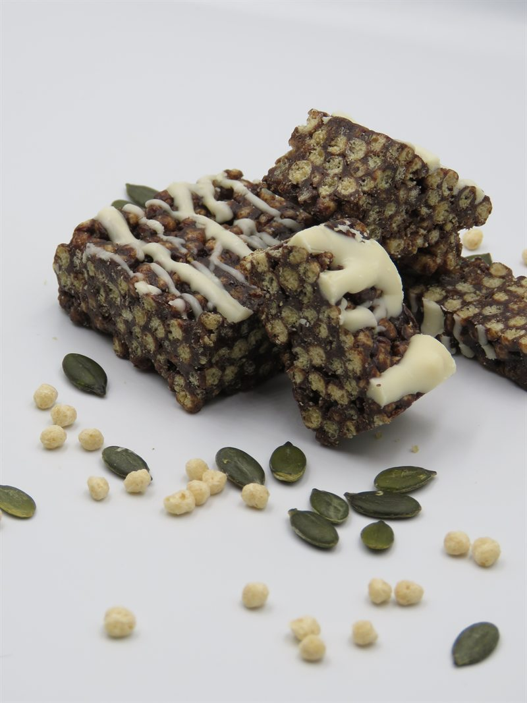
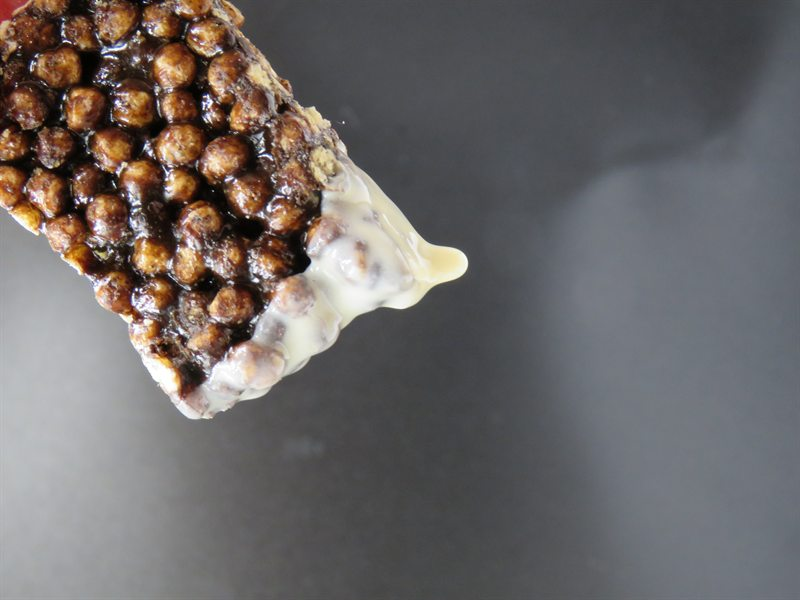
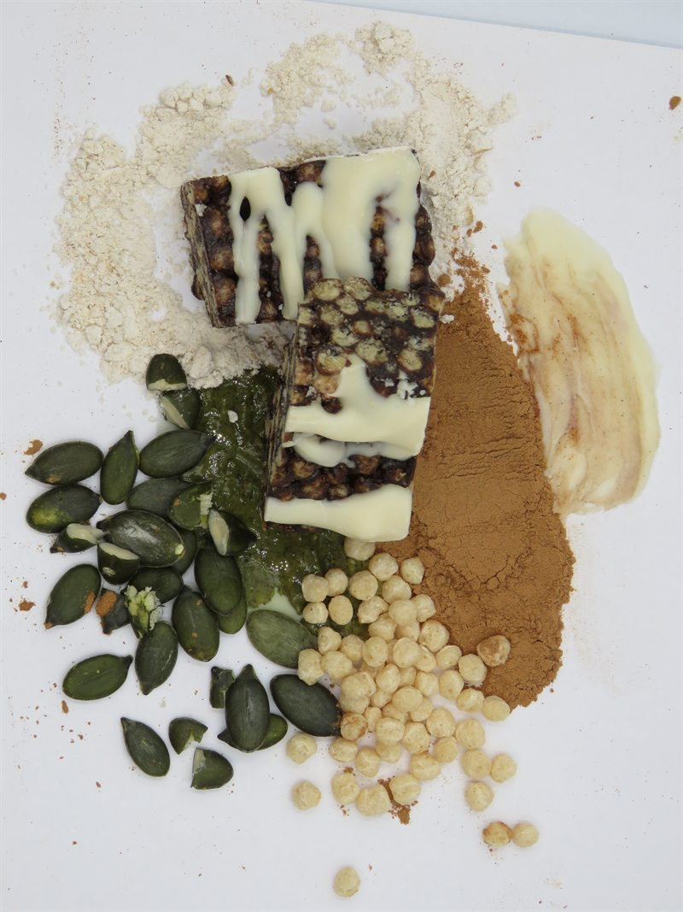
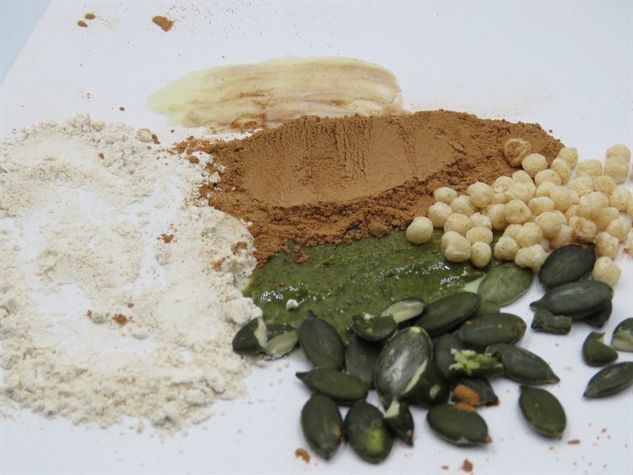
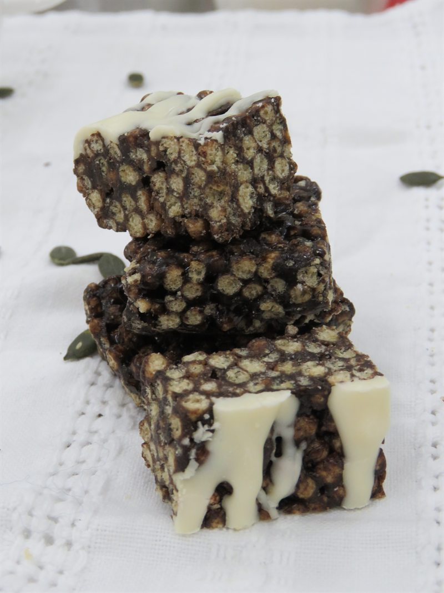

From first trials to final pack
The Sleep Treat story, in pictures
A visual record of the product, the process, the ingredients and the people behind the project.






From first trials to final pack
A visual record of the product, the process, the ingredients and the people behind the project.





